세 시안 모두 끝에 남는 것은 같습니다: 세계수 위 큰 꽃(분홍 빛)과 꽃잎, 세계수에서 이웃 마을 입구까지 이어지는 빛나는 뿌리 길, 칭호 「세계수지기」 카드. 다른 것은 이웃이 모이는 방식과 카메라입니다. 각 줄 왼쪽 세 장은 PC(처음 · 중간 · 끝), 오른쪽 세 장은 폰 세로입니다. 실제 게임 화면 위에 임시로 얹은 시안이라 꽃 모양·이름표·문구는 다듬기 전입니다.
이웃들이 세계수 둘레로 모여들고, 카메라가 나무를 돌며 천천히 올라갑니다. 꽃이 피면 마지막에 높이 올라가 뿌리 길이 이웃 마을 쪽으로 뻗는 모습을 내려다봅니다. 약 10초.
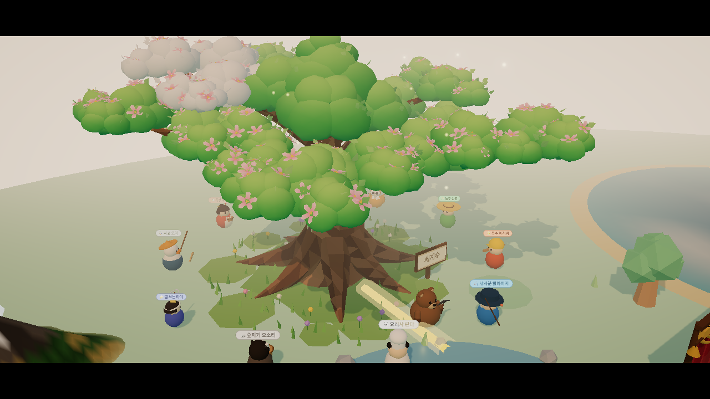
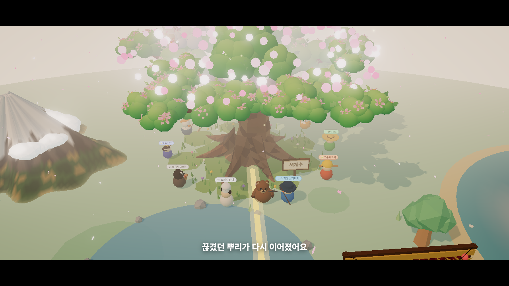
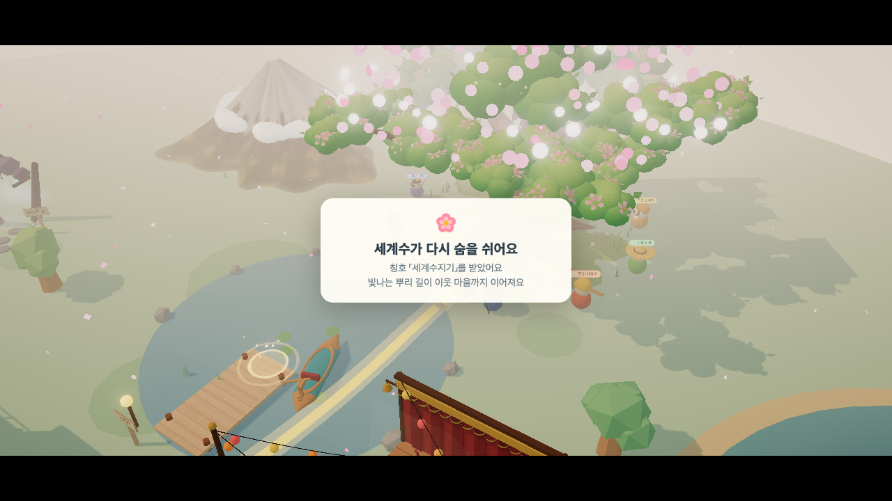
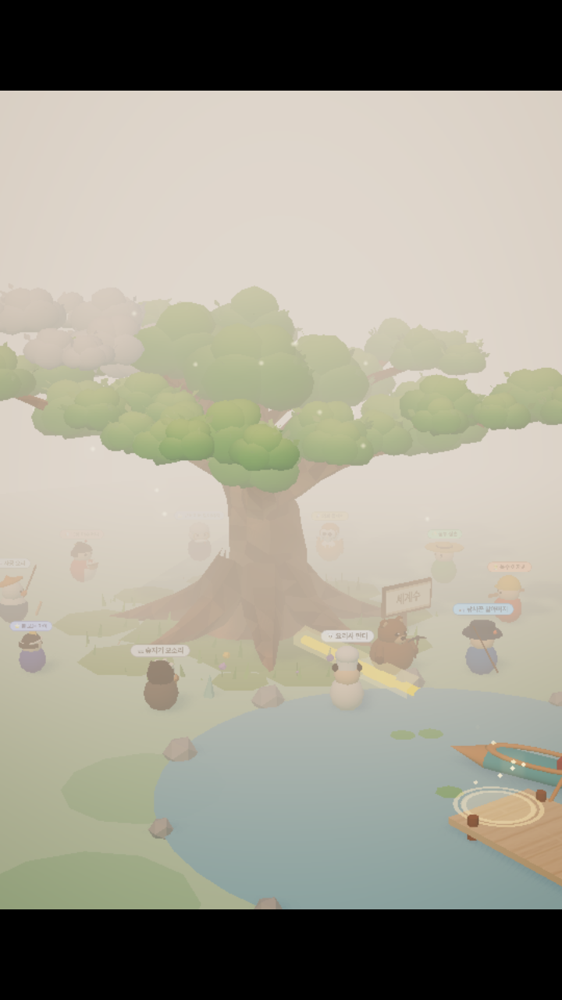
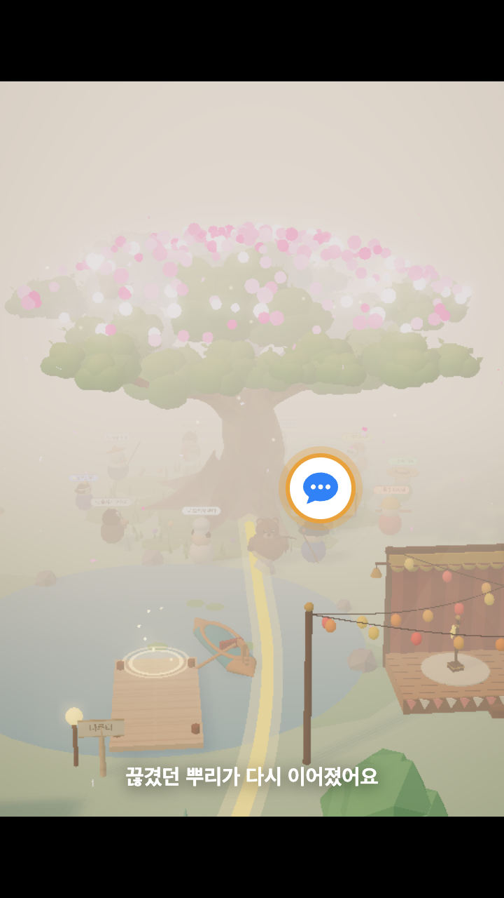
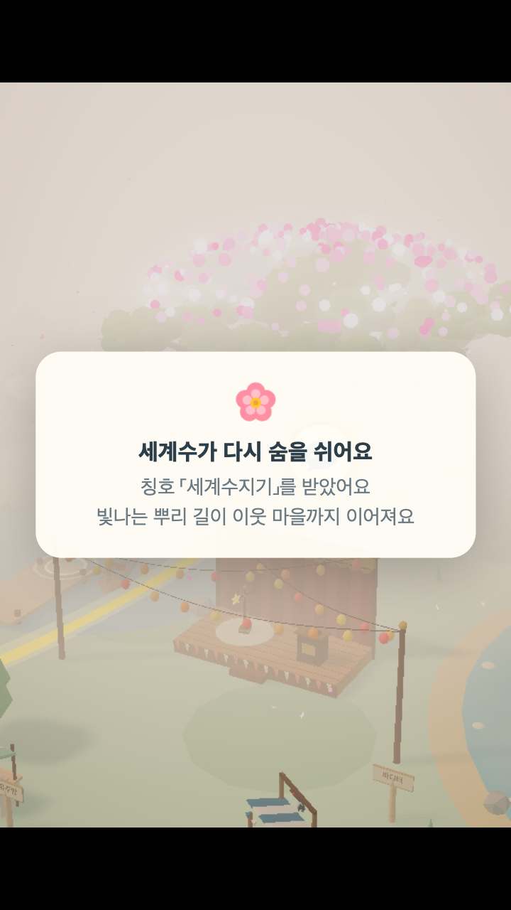
이웃 마을 입구에서 시작해 빛나는 뿌리를 따라 세계수까지 거슬러 올라갑니다. 길가 곳곳에 이웃들이 서서 맞이하고, 끝에 세계수를 올려다보면 꽃이 핍니다. 약 13초.
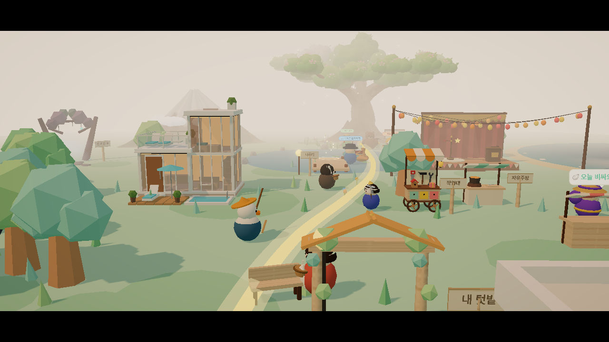
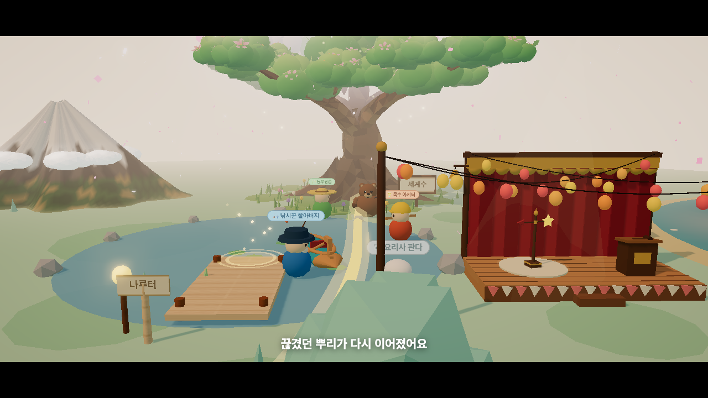
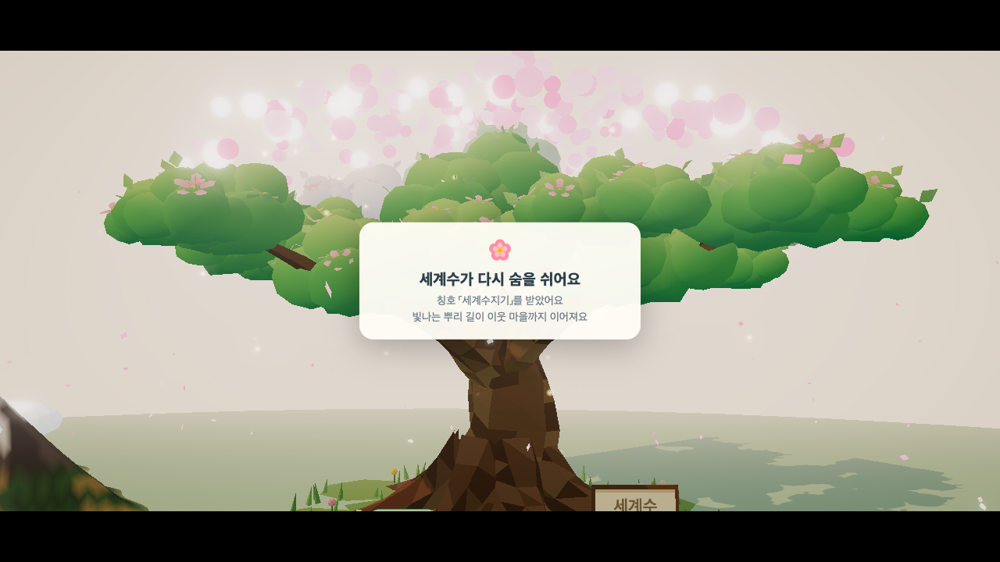
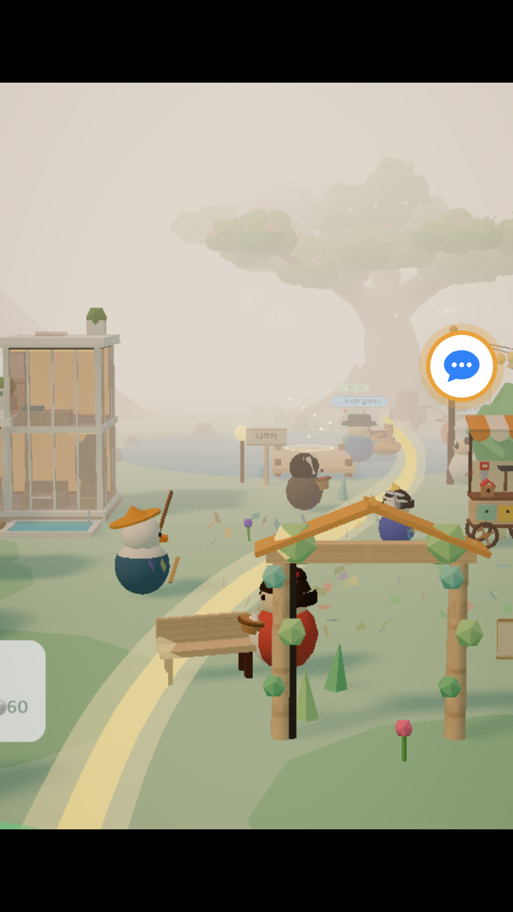
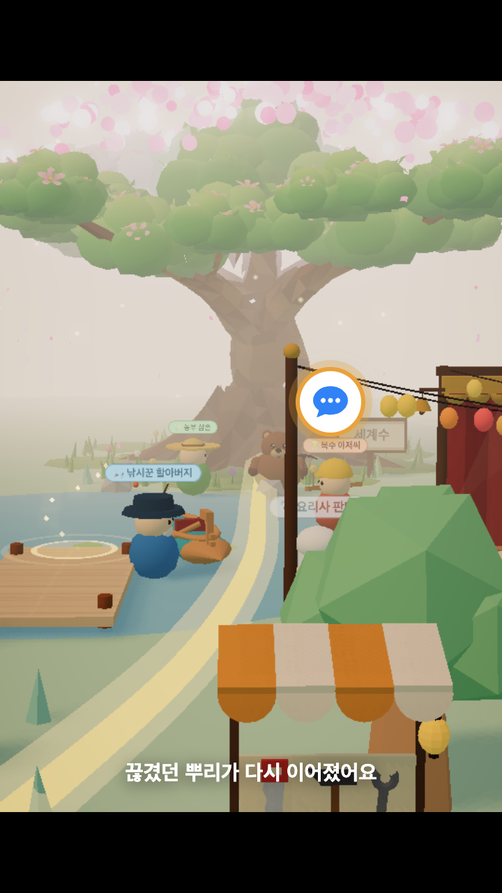
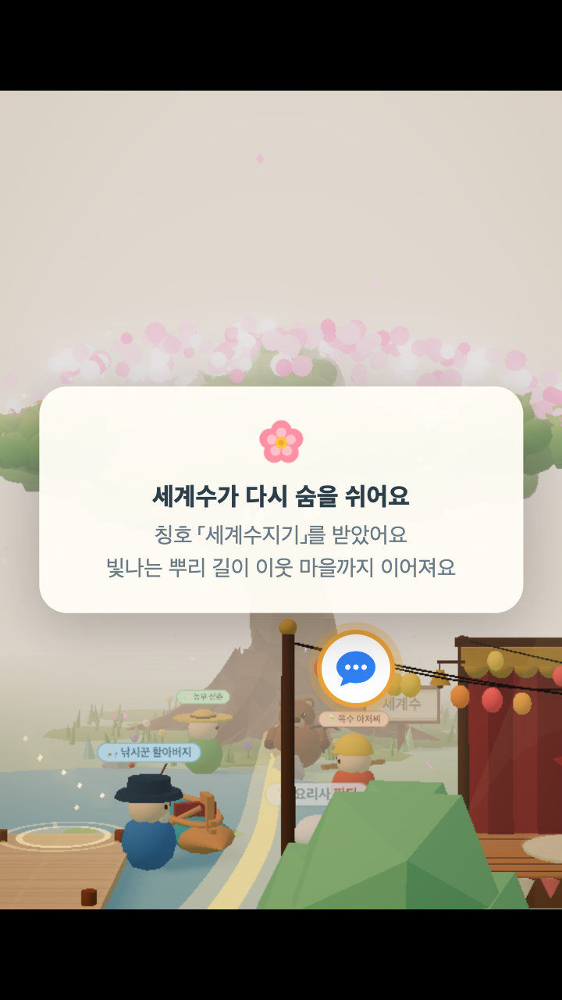
이웃들이 사방에서 걸어와 세계수 앞에 두 줄로 섭니다. 카메라는 정면에 머물고, 꽃이 피는 순간 "찰칵" 하며 사진 카드가 남습니다. 약 9초.
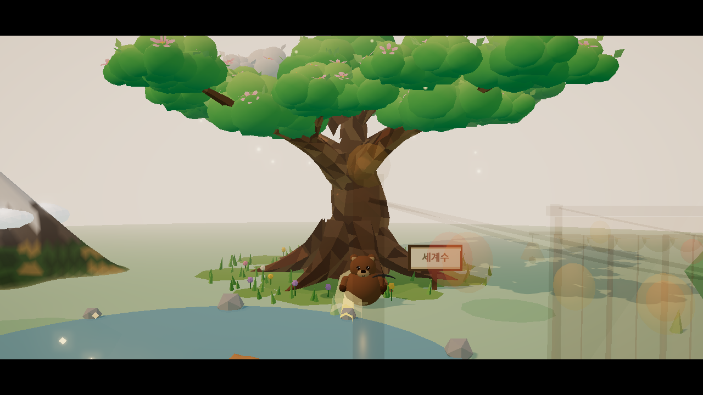
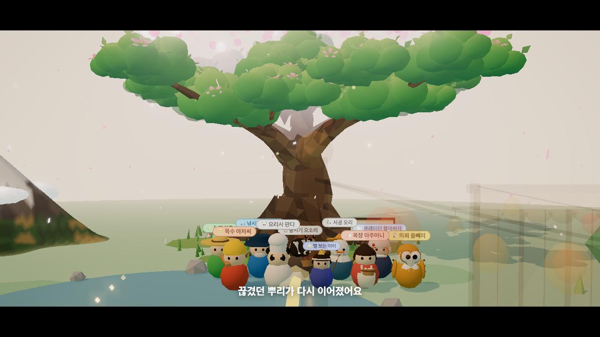
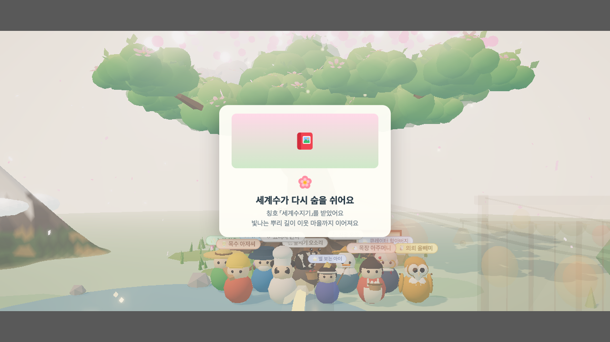
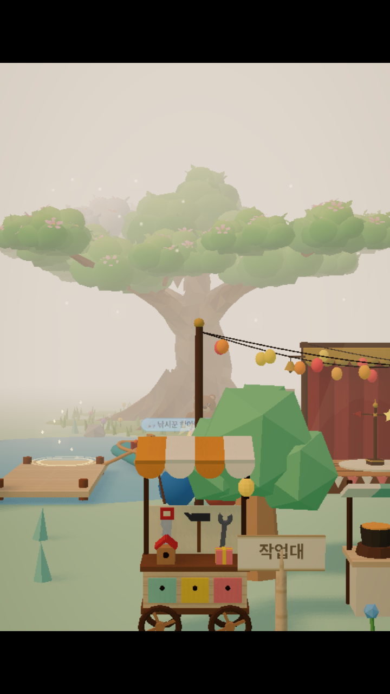
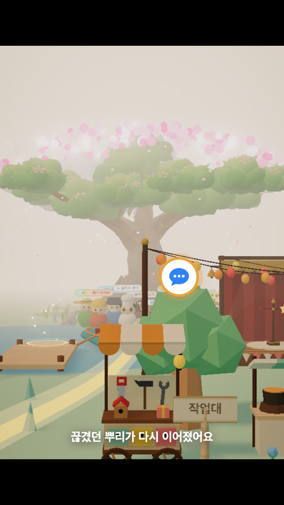
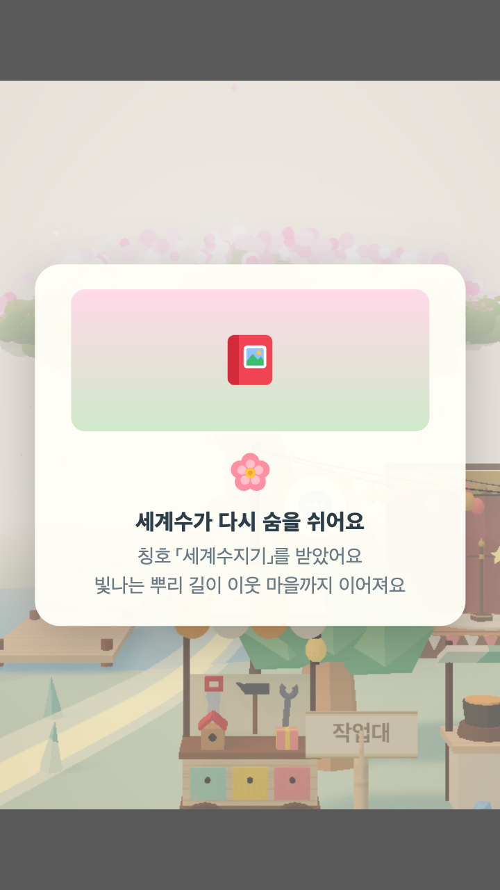